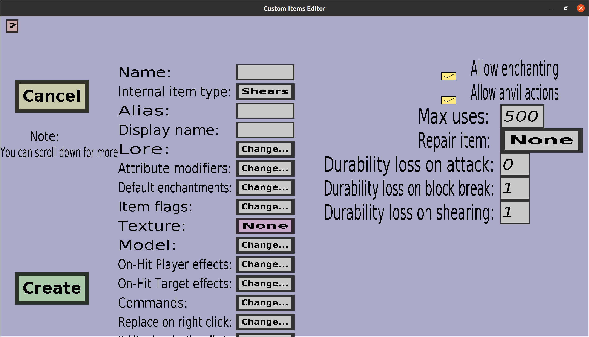

The shear edit menu can be used to create or edit custom shears. If you just started creating a new shear, it should look like this:
This menu has everything the tool edit menu has, but an additional 'Durability loss on shearing', which determines how much durability the shear will lose each time a player uses it to obtain wool from a sheep. See the section about the 'Max uses' and durability in the tool edit menu for more information about that.